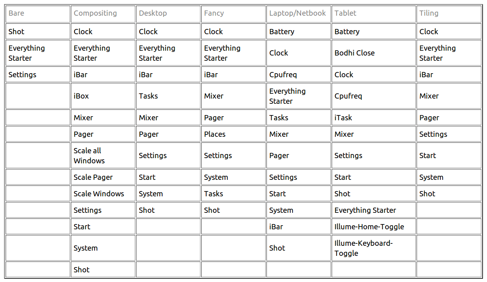

[click on any image to enlarge]
Profiles are a powerful tool to control the layout of your Enlightenment (E17) desktop. Be careful not to confuse the idea of Profiles with Themes. As stated in the Theme Info page of the Bodhi Guide, Themes answer the how of displaying aspects on your desktop. Profiles answer the where and what. It controls where aspects of the desktop are positioned, such as Shelves and Gadgets, and, more importantly, it controls what aspects of the desktop are loaded, such as Modules, Theme, Gadgets, font, icon set, etcetera.To sum all that up, Profiles are useful because they allow you to quickly and easily swap between multiple layout configurations.

Bodhi Linux's Profiles
Bodhi Linux ships with several different Profiles for you to choose from during installation: Bare, Fancy, Desktop, Laptop, and Tablet/Netbook. Each has been designed for a particular purpose, like computer-type (Desktop, Laptop. Tablet/Netbook), or user-preference (Fancy for those who want it all, Bare for those who don't). The selection of Gadgets is the primary method of optimizing for a target use.
As stated, Bodhi Linux has provided a variety of Profiles to suit a variety of use cases. For those who wish to change their Profile, open the Profile Selector under Main Menu>Settings>All>Settings>Profiles. Select the Profile you want, then click the OK button to activate the new Profile.
Saving a Personalized Profile
Suppose you have started with one of Bodhi Linux's default Profiles and have modified it by adding a few Gadgets, changing the font, changing the icon set, and changing the Theme. You really like the setup you have, but want to have a look at a different Profile and are afraid of losing your customizations. Don't worry! It's very easy to save it your profile.
Open the Profile Selector under Main Menu>Settings>All>Settings>Profiles.
Click the Add button and a pop-up window will ask you for the name you want to use. Enter it and press OK.
Your new custom Profile is now saved, and you can switch to it at any time!
You can then use another Profile if you like, make modifications to that one and save it as yet another personal Profile. Theoretically, an infinite number of profiles is possible!
Default Profiles
Depending on the Profile you are using, a certain number of Gadgets/Modules are visible by default. By visible, we mean they are either on the desktop or visible in the Main Menu. The visible gadgets/modules are depicted in the image below:
{kind=link}
*Note: The Tablet Profile does not have
the Gadget Module loaded by default.